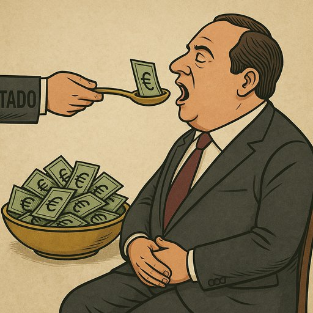

Publicado em 2025-06-02 07:51:00
Portugal, terra de navegadores audazes e mentes criativas, tornou-se hoje um país onde ser empresário raramente significa ser inovador, corajoso ou criador de futuro. Por cá, o empresário é muitas vezes um herdeiro do favor, um operador de influências, um gestor de subsídios.
O empresário português devia ser um construtor de pontes entre o talento e a economia.
Mas em vez disso, é, com frequência, um intermediário entre o Estado e o lucro fácil.
Vive da obra pública. Das rotundas. Dos fundos comunitários.
Não cria futuro — explora o presente com medo de perder o conforto do passado.
Pede isenções, apoios, favores —
mas paga mal, forma pouco, e muitas vezes aposta na cunha em vez do engenho.
O nosso tecido empresarial foi alimentado com leite de Estado e papas europeias.
Um capitalismo de rendas, onde a proximidade ao ministro vale mais do que um plano de negócios.
Um ecossistema onde a palavra “inovação” é usada em PowerPoints…
mas raramente aplicada em fábricas, software ou ciência.
Existem. E merecem respeito.
Os que começaram do zero.
Os que criaram empregos reais.
Os que exportam, arriscam, investem em gente.
Mas esses não jantam com secretários de Estado.
Trabalham em silêncio.
Pagam impostos.
E raramente são ouvidos.
Portugal precisa de uma nova geração de empresários:
Não é o que acumula.
É o que semeia.
Não é o que se pendura no Estado.
É o que constrói com autonomia.
Não é o que contorna a lei.
É o que inspira respeito e não inveja.
Chega de empresários que vivem como condes e pensam como caixeiros.
Chega de bajulação dos que confundem lucro com esperteza.
Portugal tem tudo para ser uma potência ética, produtiva e justa.
Mas para isso, os seus empresários têm de se levantar da cadeira da subvenção…
e começar a trabalhar com dignidade, visão e compromisso com o povo.
Em Portugal, ser empresário é, muitas vezes, saber onde está o subsídio — não onde está o futuro.
Enquanto uns constroem rotundas e engordam à colherada do Estado, outros trabalham em silêncio, criam empregos e pagam os seus impostos sem um convite para almoçar com o ministro.
O país precisa de empresários que deixem de mamar no orçamento público — e comecem a investir com coragem, ética e visão.
Chega de empresários de babete. O povo já não engole.